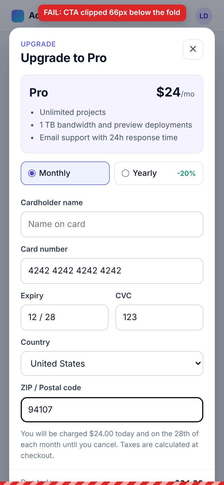
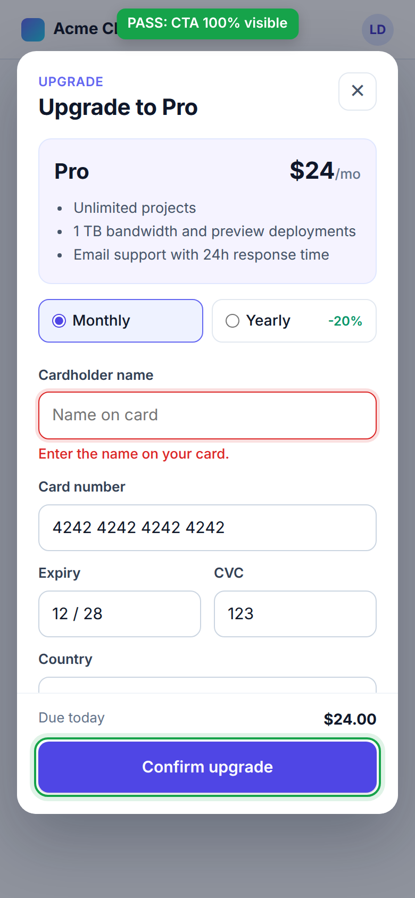

<!doctype html>
<html lang="en">
<head>
<meta charset="utf-8">
<title>Before and after comparison</title>
<link rel="stylesheet" href="shared.css">
<style>
  body { background: var(--canvas); font-size: 15px; }
  .page { padding: 36px 40px 40px; }
  .page.mobile { width: 1500px; }
  .page.desktop { width: 1600px; }
  h1 { margin: 0 0 4px; font-size: 24px; letter-spacing: -.015em; font-weight: 650; }
  .sub { margin: 0 0 24px; color: var(--muted); font-size: 15px; }
  .cols { display: grid; grid-template-columns: 1fr 1fr; gap: 24px; }
  .col { background: var(--surface); border: 1px solid var(--border); border-radius: 14px; padding: 18px 20px 22px; }
  .head { display: flex; align-items: center; gap: 10px; margin-bottom: 14px; }
  .head b { font-size: 17px; }
  .head .sha { font-family: var(--mono); font-size: 12.5px; color: var(--muted); background: var(--surface-2); border: 1px solid var(--border-soft); border-radius: 6px; padding: 2px 7px; }
  .head .pill { margin-left: auto; font-size: 13px; }
  .stage { position: relative; display: grid; grid-template-columns: 390px 1fr; gap: 26px; }
  .phone { position: relative; width: 390px; }
  .phone img { display: block; width: 390px; height: 844px; border-radius: 14px; box-shadow: 0 0 0 1px rgb(31 35 40 / .15), 0 10px 26px rgb(31 35 40 / .12); }
  .below { position: relative; height: 92px; }
  .fold { position: absolute; left: -12px; right: -12px; top: 844px; border-top: 2px dashed var(--red); }
  .fold span { position: absolute; right: 0; top: -22px; font: 600 12px var(--mono); color: var(--red); background: var(--surface); padding: 0 4px; }
  .ghost { position: absolute; border: 2.5px dashed var(--red); border-radius: 10px; background: repeating-linear-gradient(135deg, rgb(207 34 46 / .12) 0 7px, rgb(207 34 46 / .03) 7px 14px); display: grid; place-items: center; font-weight: 600; font-size: 13px; color: var(--red); }
  .hit { position: absolute; border: 2.5px solid #1f883d; border-radius: 12px; box-shadow: 0 0 0 5px rgb(31 136 61 / .16); }
  .notes { display: grid; gap: 10px; align-content: start; padding-top: 4px; }
  .note { border-radius: 10px; padding: 10px 12px; border: 1px solid var(--border-soft); background: var(--surface-2); font-size: 14px; line-height: 1.45; }
  .note b { display: block; font-size: 12px; text-transform: uppercase; letter-spacing: .04em; color: var(--muted); margin-bottom: 2px; }
  .note.bad { background: var(--red-bg); border-color: var(--red-border); color: #82071e; }
  .note.good { background: var(--green-bg); border-color: var(--green-border); color: #116329; }
  .note.bad b, .note.good b { color: inherit; opacity: .8; }
  .note code { background: rgb(255 255 255 / .6); }
  .desk img { display: block; width: 100%; border-radius: 10px; box-shadow: 0 0 0 1px rgb(31 35 40 / .15), 0 8px 22px rgb(31 35 40 / .1); }
  .desk .metrics { display: flex; flex-wrap: wrap; gap: 8px; margin-top: 14px; }
  .chip { font: 600 12.5px var(--mono); padding: 5px 9px; border-radius: 7px; background: var(--green-bg); color: #116329; border: 1px solid var(--green-border); }
  .chip.plain { background: var(--surface-2); color: var(--fg); border-color: var(--border-soft); }
  .foot { margin-top: 18px; color: var(--muted); font-size: 13px; }
</style>
</head>
<body>
<div class="page" id="root"></div>
<script type="module">
  const view = new URLSearchParams(location.search).get("view") ?? "mobile";
  const d = await (await fetch("../artifacts/pr-1/inspection.json")).json();
  const r1 = (n) => Math.round(n * 10) / 10;
  const sha = (s) => s.slice(0, 7);
  const sides = [
    { key: "before", title: "main (:3000)", sha: d.pr.baseSha, img: "before" },
    { key: "after", title: "PR #1 (:3001)", sha: d.pr.headSha, img: "after" },
  ];
  const root = document.getElementById("root");
  root.className = `page ${view}`;
  const foot = `<p class="foot">Real run on PR #1 at pinned SHAs ${sha(d.pr.baseSha)} and ${sha(d.pr.headSha)}. Same probe as Box mode, run here in local Chromium ${d.chromium}. Screenshots at 2x.</p>`;

  if (view === "desktop") {
    root.innerHTML = `<h1>Desktop 1440x900: both branches pass</h1>
      <p class="sub">On a laptop the dialog fits, so a reviewer checking the PR on desktop sees nothing wrong.</p>
      <div class="cols">${sides.map((s) => {
        const r = d[s.key].reports.desktop;
        return `<div class="col desk"><div class="head"><b>${s.title}</b><span class="sha">${sha(s.sha)}</span><span class="pill pass">PASS</span></div>
          
          <div class="metrics"><span class="chip">CTA ${r.cta.visiblePercent}% visible</span><span class="chip plain">bottom=${r1(r.cta.rect.bottom)}px in ${r.cta.viewportHeight}px viewport</span><span class="chip plain">console errors: ${r.consoleErrors.length}</span></div></div>`;
      }).join("")}</div>${foot}`;
  } else {
    const b = d.before.reports.mobile;
    const a = d.after.reports.mobile;
    const ghost = `<div class="ghost" style="left:${b.cta.rect.left}px;top:${b.cta.rect.top}px;width:${b.cta.rect.width}px;height:${b.cta.rect.height}px">Confirm upgrade</div>`;
    const hit = `<div class="hit" style="left:${a.cta.rect.left - 4}px;top:${a.cta.rect.top - 4}px;width:${a.cta.rect.width + 8}px;height:${a.cta.rect.height + 8}px"></div>`;
    root.innerHTML = `<h1>Mobile 390x844: main clips the button, PR #1 keeps it on screen</h1>
      <p class="sub">The dashed line is the bottom of the phone screen. The red box is where "Confirm upgrade" really sits on main.</p>
      <div class="cols">
        <div class="col"><div class="head"><b>main (:3000)</b><span class="sha">${sha(d.pr.baseSha)}</span><span class="pill fail">FAIL</span></div>
          <div class="stage"><div class="phone"><div class="below"></div>${ghost}<div class="fold"><span>844px fold</span></div></div>
          <div class="notes">
            <div class="note bad"><b>Bounding box</b>top ${r1(b.cta.rect.top)}px, bottom ${r1(b.cta.rect.bottom)}px</div>
            <div class="note bad"><b>Below the fold</b>${r1(b.cta.overflowBelowFoldPx)}px</div>
            <div class="note bad"><b>Visible</b>${b.cta.visiblePercent}%</div>
            <div class="note bad"><b>Submit</b>Unreachable. Playwright: element is outside of the viewport.</div>
            <div class="note"><b>Console errors</b>${b.consoleErrors.length}</div>
          </div></div></div>
        <div class="col"><div class="head"><b>PR #1 (:3001)</b><span class="sha">${sha(d.pr.headSha)}</span><span class="pill pass">PASS</span></div>
          <div class="stage"><div class="phone"><div class="below"></div>${hit}<div class="fold"><span>844px fold</span></div></div>
          <div class="notes">
            <div class="note good"><b>Bounding box</b>top ${r1(a.cta.rect.top)}px, bottom ${r1(a.cta.rect.bottom)}px</div>
            <div class="note good"><b>Above the fold</b>${r1(a.cta.viewportHeight - a.cta.rect.bottom)}px of room</div>
            <div class="note good"><b>Visible</b>${a.cta.visiblePercent}%, nothing covering it</div>
            <div class="note good"><b>Submit with empty name</b>"${a.submit.validationMessage}"</div>
            <div class="note good"><b>After validation</b>${a.submit.ctaAfter.visiblePercent}% visible</div>
            <div class="note"><b>Console errors</b>${a.consoleErrors.length}</div>
          </div></div></div>
      </div>${foot}`;
  }
  await Promise.all([...document.images].map((img) => img.decode()));
  await document.fonts.ready;
  document.body.dataset.ready = "1";
</script>
</body>
</html>
